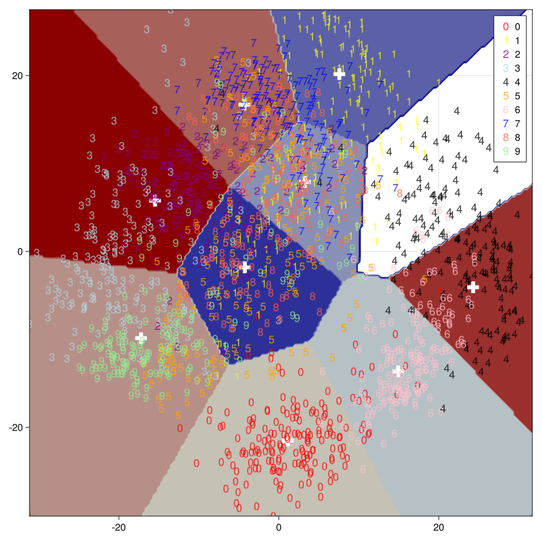

import MLJ:transform,inverse_transform,fit!,predict,fitted_params
using CSV, DataFrames,JLSO,LinearAlgebra,MLJ,GLMakie,PipeWARNING: using DataFrames.transform in module Main conflicts with an existing identifier.从 64维数字降维到 2 维
PCA = @load PCA pkg=MultivariateStats
pcamodel=PCA(maxoutdim=2)
kpcamachine = machine(pcamodel,Xtr ) |> fit!
pcaXtr=transform(kpcamachine, Xtr)
nums=200
function boundary_data(data;n=nums)
xs=extrema(data[:x1]).|>d->round(d,digits=3)
ys=extrema(data[:x2]).|>d->round(d,digits=3)
tx = LinRange(xs...,n)
ty = LinRange(ys...,n)
xtest = mapreduce(collect, hcat, Iterators.product(tx, ty));
xtest=MLJ.table(xtest')
return tx,ty, xtest
end
tx,ty, Xtest=boundary_data(pcaXtr)[ Info: For silent loading, specify `verbosity=0`.
┌ Warning: The number and/or types of data arguments do not match what the specified model
│ supports. Suppress this type check by specifying `scitype_check_level=0`.
│
│ Run `@doc MultivariateStats.PCA` to learn more about your model's requirements.
│
│ Commonly, but non exclusively, supervised models are constructed using the syntax
│ `machine(model, X, y)` or `machine(model, X, y, w)` while most other models are
│ constructed with `machine(model, X)`. Here `X` are features, `y` a target, and `w`
│ sample or class weights.
│
│ In general, data in `machine(model, data...)` is expected to satisfy
│
│ scitype(data) <: MLJ.fit_data_scitype(model)
│
│ In the present case:
│
│ scitype(data) = Tuple{AbstractMatrix{Continuous}}
│
│ fit_data_scitype(model) = Tuple{Table{<:AbstractVector{<:Continuous}}}
└ @ MLJBase ~/.julia/packages/MLJBase/fEiP2/src/machines.jl:230
[ Info: Training machine(PCA(maxoutdim = 2, …), …).import MLJMultivariateStatsInterface ✔(LinRange{Float64}(-31.17, 31.7, 200), LinRange{Float64}(-30.092, 27.494, 200), Tables.MatrixTable{Adjoint{Float64, Matrix{Float64}}} with 40000 rows, 2 columns, and schema:
:x1 Float64
:x2 Float64)KMeans = @load KMeans pkg=Clustering
model = KMeans(k=10)
mach = machine(model, pcaXtr) |> fit!
centers=fitted_params(mach)[:centers]
yhat = predict(mach, Xtest)
ytest=yhat|>Array|>d->reshape(d,nums,nums)import MLJClusteringInterface ✔[ Info: For silent loading, specify `verbosity=0`.
[ Info: Training machine(KMeans(k = 10, …), …).200×200 Matrix{Int64}:
4 4 4 4 4 4 4 4 4 4 4 4 4 … 1 1 1 1 1 1 1 1 1
4 4 4 4 4 4 4 4 4 4 4 4 4 1 1 1 1 1 1 1 1 1
4 4 4 4 4 4 4 4 4 4 4 4 4 1 1 1 1 1 1 1 1 1
4 4 4 4 4 4 4 4 4 4 4 4 4 1 1 1 1 1 1 1 1 1
4 4 4 4 4 4 4 4 4 4 4 4 4 1 1 1 1 1 1 1 1 1
4 4 4 4 4 4 4 4 4 4 4 4 4 … 1 1 1 1 1 1 1 1 1
4 4 4 4 4 4 4 4 4 4 4 4 4 1 1 1 1 1 1 1 1 1
4 4 4 4 4 4 4 4 4 4 4 4 4 1 1 1 1 1 1 1 1 1
4 4 4 4 4 4 4 4 4 4 4 4 4 1 1 1 1 1 1 1 1 1
4 4 4 4 4 4 4 4 4 4 4 4 4 1 1 1 1 1 1 1 1 1
4 4 4 4 4 4 4 4 4 4 4 4 4 … 1 1 1 1 1 1 1 1 1
4 4 4 4 4 4 4 4 4 4 4 4 4 1 1 1 1 1 1 1 1 1
4 4 4 4 4 4 4 4 4 4 4 4 4 1 1 1 1 1 1 1 1 1
⋮ ⋮ ⋮ ⋱ ⋮
6 6 6 6 6 6 6 6 6 6 6 6 6 10 8 8 8 8 8 8 8 8
6 6 6 6 6 6 6 6 6 6 6 6 6 10 10 8 8 8 8 8 8 8
6 6 6 6 6 6 6 6 6 6 6 6 6 … 10 10 10 8 8 8 8 8 8
6 6 6 6 6 6 6 6 6 6 6 6 6 10 10 10 10 8 8 8 8 8
6 6 6 6 6 6 6 6 6 6 6 6 6 10 10 10 10 8 8 8 8 8
6 6 6 6 6 6 6 6 6 6 6 6 6 10 10 10 10 10 8 8 8 8
6 6 6 6 6 6 6 6 6 6 6 6 6 10 10 10 10 10 10 8 8 8
6 6 6 6 6 6 6 6 6 6 6 6 6 … 10 10 10 10 10 10 10 8 8
6 6 6 6 6 6 6 6 6 6 6 6 6 10 10 10 10 10 10 10 10 8
6 6 6 6 6 6 6 6 6 6 6 6 6 10 10 10 10 10 10 10 10 10
6 6 6 6 6 6 6 6 6 6 6 6 6 10 10 10 10 10 10 10 10 10
6 6 6 6 6 6 6 6 6 6 6 6 6 10 10 10 10 10 10 10 10 10function plot_img()
fig=Figure(resolution=(900,900))
ax= Axis(fig[1,1])
colors=[:red, :yellow,:purple,:lightblue,:black,:orange,:pink,:blue,:tomato,:lightgreen,]
markers=['0','1','2','3','4','5','6','7','8','9']
contourf!(ax, tx,ty,ytest,levels=length(cat),colormap=:redsblues)
scatter!(ax, centers[1,:],centers[2,:],marker=:cross,markersize=26,color=:white)
for (i,c) in enumerate(cat)
dx=pcaXtr[:x1][ytr.==c]
dy=pcaXtr[:x2][ytr.==c]
scatter!(ax, dx,dy,color=(colors[i],0.8),label="$c",marker=markers[i],markersize=18)
end
axislegend(ax)
fig
end
plot_img()